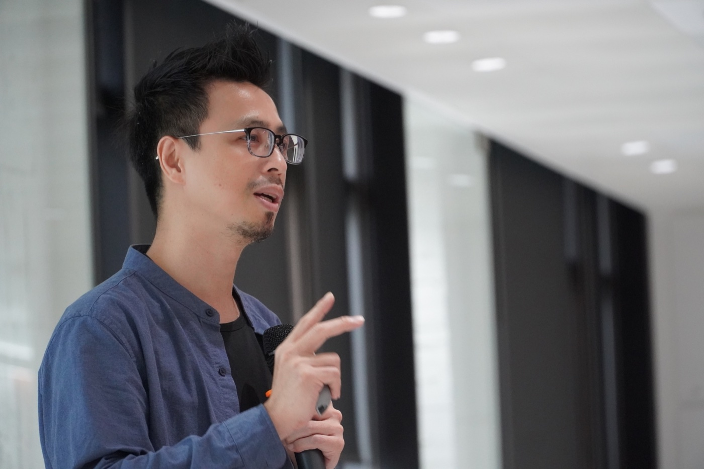
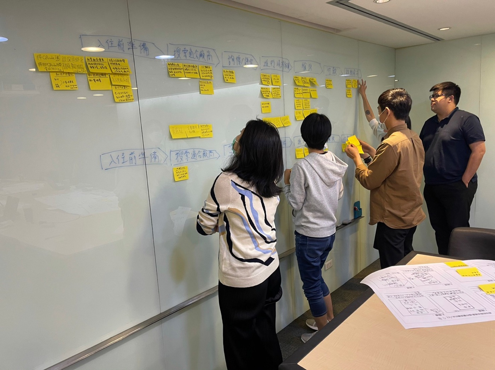

以體驗架構，
帶領團隊共同交付。
在 ZyXEL，2010 年建立 HCI 多元職能團隊，串接研究、互動、視覺與前端。以跨平台框架與開發標準，把 UI/UX 帶進產品策略與研發決策。
專業價值 / UI/UX 架構先驅思維、團隊建立與端到端交付領導。

我是 Howard。
我在科技、設計與商業之間工作。
從網通介面、智慧硬體與 3D 協作，走進品牌文化、材料與實體空間。每一次跨域，都在回答同一個問題：如何把一種能力，變成對人有用、團隊做得出來，也能持續發展的價值？
我的專業，是理解這些領域如何一起運作，將產業變化轉成今天可以驗證的機會。

技術的價值，從被人理解與使用開始。
從設計一家店，走向一個區域的服務網絡。
線上資訊改變了交易的入口，實體據點就需要創造新的到訪理由。三代店的思考，從空間風格往前推進到店型、服務、人員與經營架構。
把洽談、展示、共享、展演與辦公拆成可組合的模組，讓不同坪數與區位，能回應不同頻率的需求。
讓文化，成為可以觸摸的品牌語言。
從「人」與「竹」的文化解讀，進入單元造型、旋轉排列、模具與試製。品牌識別在這裡延伸成空間的細節，也成為必須與製造、施工共同完成的工作。
人字與家的輪廓，連結以人為本；竹的虛心、挺立與節節相承，轉譯為傾聽、承諾與持續成長。
文化轉譯 → 單元設計 → 模具試製 → 空間導入
專業角色 / 文化、設計、製造與工程的整合我的產業思考有一條延續的線：
從跨裝置操作、智慧硬體與協作平台，到服務網絡與空間模組。AI 的機會，發生在這些能力開始互相連結的地方。
3／5／10 年為策略探索尺度。以下是依作品經驗延伸的假設，非確定預測；採用率、資料品質、服務成本與實際需求都可能改變方向。
本機工具與文化互動，
是我把思考做成產品的兩種實踐。
把既有物件資料帶進一致的展示版型：辨識、核對、編輯、預覽、輸出。原始工具封裝於 Mac 本機，可離線使用。
以下為互動版型示意，非原工具，不執行 OCR 或 PDF 轉換。原工具的能力與驗證狀態可在案例中查看。
採光・綠意・自在日常
品牌規則 × 內容結構 × 自動套版
LAYOUT EXPERIENCE / 非實際銷售物件將內容來源、知識架構與操作節奏，編排成可探索的文化體驗。
照片取自本人指定的本機工作相簿。活動名稱依原目錄及檔名整理；未以照片推定其他人的職位、合作合約或績效。
先旋轉選案，或切換總覽。
進入案例後，逐章理解策略、細節與交付。
問題 → 策略 → 細節 → 角色與交付 → 價值 → 未來機會
目前沒有符合的專案，請調整分類或關鍵字。
選一個問題，沿著專案之間的關係深入。
帶到 ChatGPT 時，會先讓你確認包含的作品脈絡。
站內回答為依來源編輯的導覽；ChatGPT 入口會開啟外部服務，並非本頁即時推論。